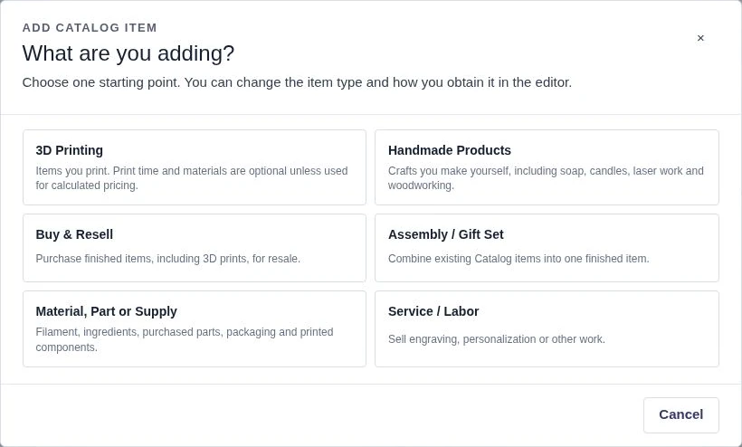
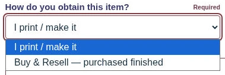
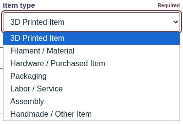
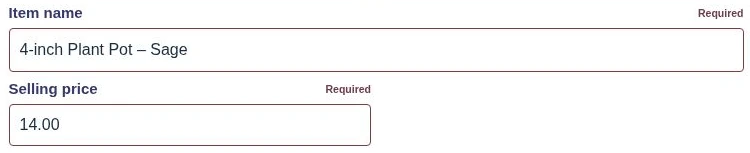
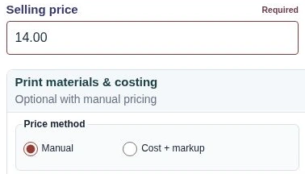

Add your first Catalog item
For a printed item with a manual price, the chooser fills in two required fields. Enter the item name and selling price, then save.
Open Catalog in the appCatalog & Pricing
Watch the basics
The videos use Practice — Sample Data. Try the sample planter in Practice, or open Catalog in your Business workspace to enter your own item. Items stay in the workspace where you save them.
1. Open Catalog
In Catalog, select + Add Catalog Item.
2. Choose a workflow
Under What are you adding?, choose 3D Printing for a planter you print yourself.

3. Complete the required fields
The Required label and theme-colored outline identify the fields to complete. Keep I print / make it and 3D Printed Item for this example.


Enter 4-inch Plant Pot – Sage for the name and 14.00 for the selling price.

4. Save Item
Leave the optional sections closed and select Save Item.
To enter stock afterward, use Receive, Use, Adjust or Build as appropriate.
Optional details
For a manual price, you can leave Print materials & costing closed. To calculate a price from your costs, open it and choose Cost + markup. Enter the materials and print time the editor requests.

Open Inventory to set up tracking or Additional details for a SKU or category. You can save with No category.
Other items
Buy & Resell uses the cost of the purchased finished item, not your printer time. Assembly / Gift Set requires existing Catalog components. Use Find Catalog component and start typing. Matching items appear immediately beneath the search field; tap one to select it, then enter the quantity and choose Add component. The list shows up to 12 results at a time, and printed-item materials use the same live search. Category remains optional.
On iPhone
The same workflow applies. Scroll within the editor to reach optional sections and Save.